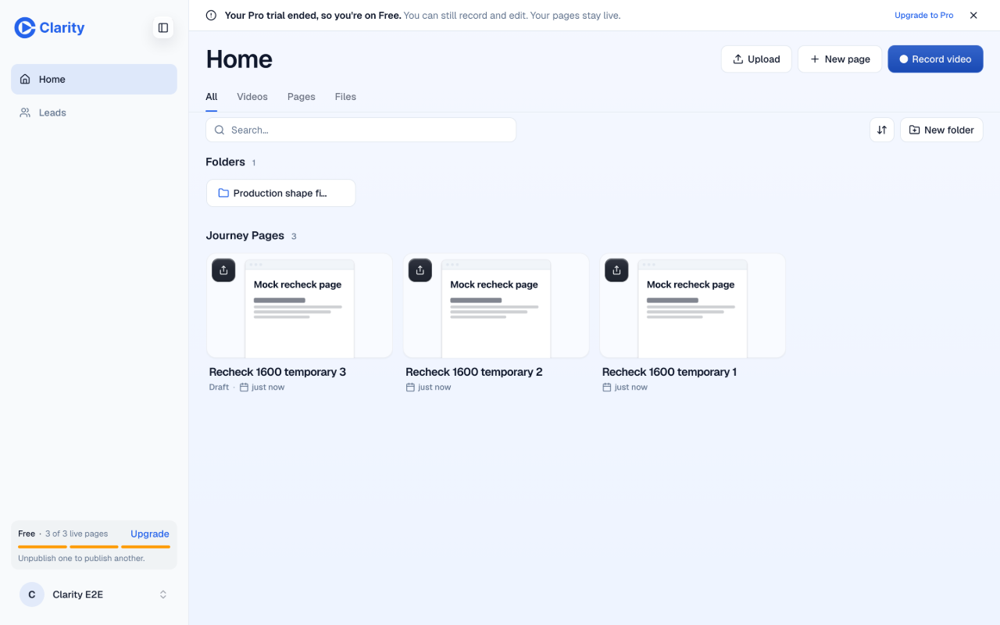
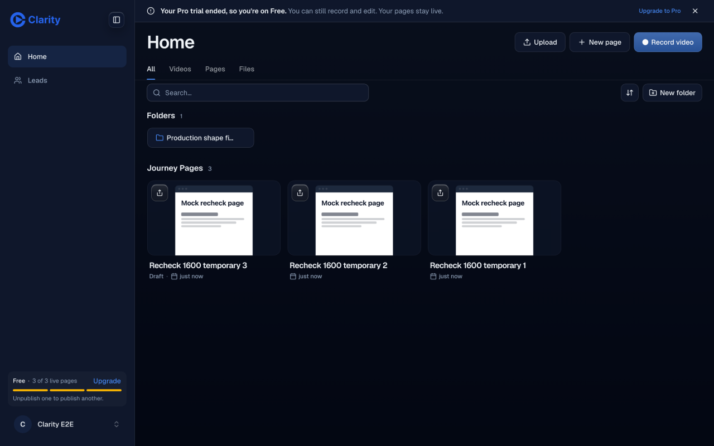
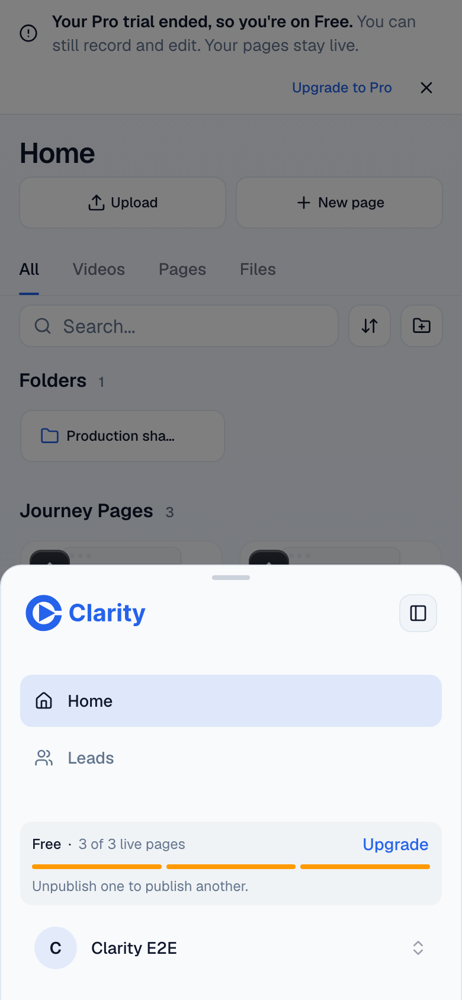
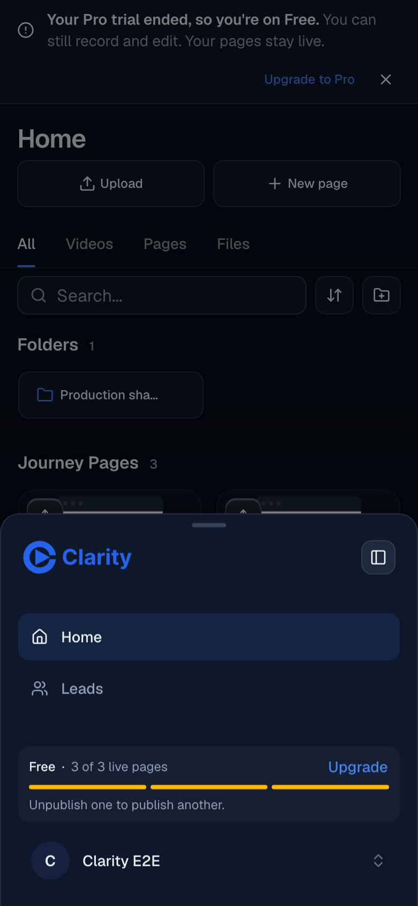
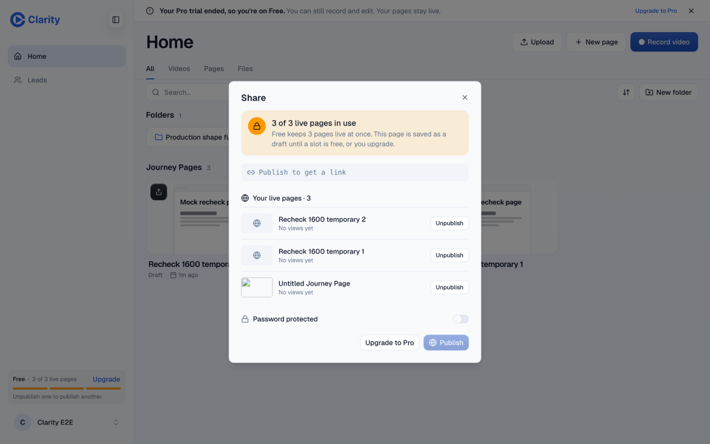
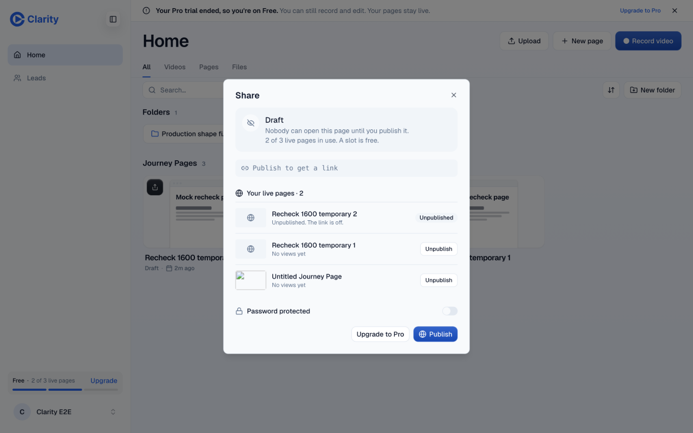
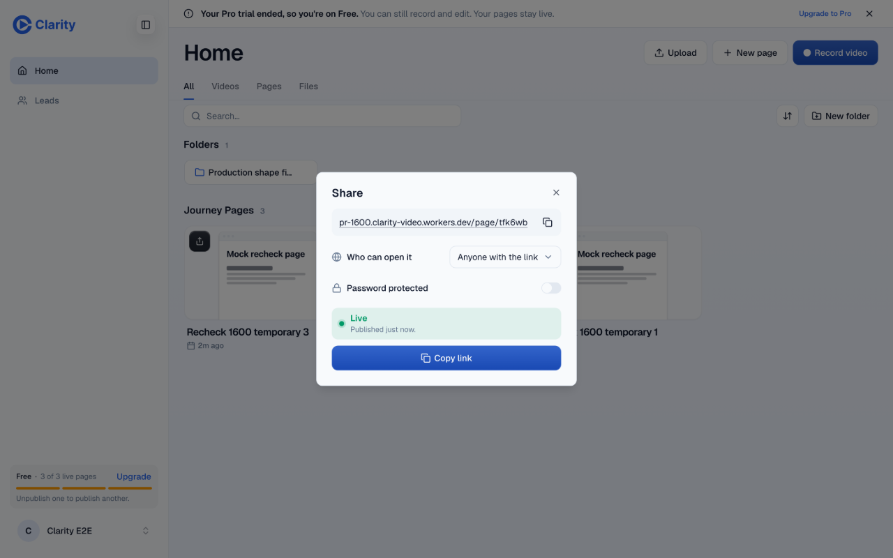
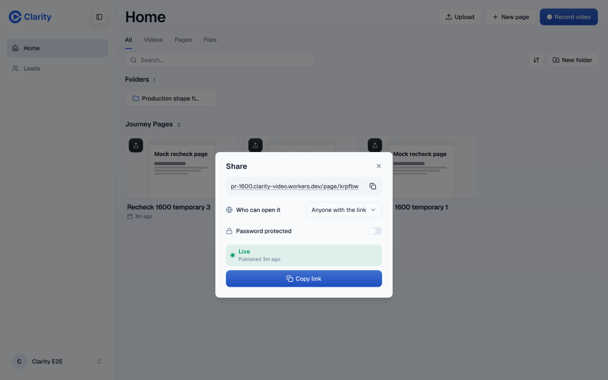

Verdict: PASS+NOTES. Head b5ac7667bab54b8556d6fc283db96d723c42a174. Verified on 2026-11-02 at the PR preview. Authenticated doctor matched this head.
The AppShell diff adds PlanWarningBanner inside LivePageLimitProvider. The registry adds retryVideoClip and its generated spend effect. These combine the two sides without another behavioral edit. Outside those three files and generated docs, zero-context stable patch IDs both equal a32576d0fd0b0c4ae9e9d0c521dce01054731373. Ordinary-context IDs differ because main added TrialAccessContext in trial-access.ts. The added and removed lines match.
Fresh detached checkout and frozen pnpm install. Ran pnpm exec vitest run tests/free-usage-limit.test.tsx tests/action-registry.test.ts in editor. Test Files 2 passed (2). Tests 22 passed (22). Read the registry test and confirmed retryVideoClip remains registered as videos_retry_clip with its rearm path. No clip retry mutation was needed.
Trial-ended Free showed both the meter and the banner at 1440 × 900 and 390 × 844 in light and dark mode. On phones the meter is in More. Its sheet dims the background but does not cover the banner.




The fourth Publish returned HTTP 409 live_page_limit with count 3 and limit 3. The dialog listed the three Live pages. Unpublish of temporary page 2 returned 200, the meter fell to 2, and Publish of temporary page 3 returned 200 in the same dialog. A separate pages_get read confirmed stage live. The meter returned to 3 without reloading.



After restoring Pro, publishing temporary page 2 brought the count to 4 with no limit dialog and no meter.

Follow-up note. The existing fixture's Mux thumbnail did not load in the limit dialog. This recheck does not establish whether it predates the merge, and it is not a failure verdict. Temporary text pages correctly used placeholder icons.
Requests, responses and cleanup reads · Test output · Merge diff